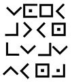

41. BÖLÜM
Robert Langdon taş piramidi inceledi. Bu mümkün değil.
Sato başını kaldırmadan, “Şifrelenmiş antik bir dil,” dedi. “Söyler misiniz bu tanımlamaya uyuyor mu?”
Piramidin yeni görünen kenarında, pürüzsüz taşın üstüne on altı karakterden oluşan bir dizi kazınmıştı.

Langdon’ın yanında ağzı açık bir halde duran Anderson, Langdon’ın içine düştüğü şaşkınlığı paylaşıyordu. Güvenlik şefi bir tür uzaylı klavyesi görmüş gibi bakıyordu.
Sato, “Profesör?” dedi. “Herhalde siz bunu okuyabilirsiniz?”
Langdon döndü. “Neden böyle düşünüyorsunuz?”
“Çünkü siz buraya getirildiniz profesör. Siz seçildiniz. Bu yazı bir tür şifreye benziyor ve ününüzü göz önünde bulundurursak, buraya bunu deşifre etmek için getirildiğiniz bence çok açık.”
İtiraf etmeliydi ki, Roma ve Paris’teki deneyimlerinden sonra, tarihteki çözülmemiş kodlamaları -Phaistos Diski, Dorabella Şifresi ve gizemli Voynich Elyazması- deşifre etmesi için sürekli ondan yardım talebinde bulunulmuştu.
Sato parmaklarını yazının üzerinde gezdirdi. “Bana bu ikonların anlamını söyleyebilir misiniz?”
Langdon, onlar ikon değil, diye düşündü. Sembol. Dili hemen tanımıştı, on yedinci yüzyıldan kalma şifreli bir kriptoydu. Langdon nasıl kırılacağını gayet iyi biliyordu. Tereddütle, “Hanımefendi, bu piramit Peter’ın özel mülkü,” dedi.
“Özel olsa da olmasa da Washington’a getirilme sebebiniz bu şifreyse, size başka şans tanımıyorum. Ne dediğini bilmek istiyorum.”
Sato’nun BlackBerry’si hararetle vızıldayınca, aleti cebinden hızla çıkardı ve uzunca bir süre gelen mesajı inceledi. Langdon, Kongre Binası dahili kablosuz bilgisayar ağının bu kadar aşağıda hizmet vermesine şaşırmıştı.
Sato homurdanıp kaşlarını kaldırdı ve Langdon’a tuhaf bir bakış fırlattı.
Dönerek, “Şef Anderson?” dedi. “Özel olarak konuşabilir miyiz?” Anderson’a yanına gelmesini işaret etti ve Langdon’ı Peter’ın Tefekkür Odası’ndaki titrek mum ışığında tek başına bırakarak kapkaranlık koridorda gözden kayboldular.
Şef Anderson bu akşamın ne zaman sona ereceğini merak ediyordu. Benim Rotunda’mda kesik bir el mi? Benim bodrumumda bir ölüm mabedi mi? Taş bir piramidin üstünde tuhaf oymalar mı? Nedense Redskins maçı artık önemini yitirmişti.
Koridorun karanlığında Sato’nun peşinden giderken fenerini yaktı. Işığı zayıf olsa da hiç yoktan iyiydi. Sato, onu koridorda Langdon’ın görüş alanının dışına kadar yürüttü.
Anderson’a BlackBerry’sini uzatırken, “Şuna bir bak,” diye fısıldadı.
Anderson aleti alıp, ışıklı ekrana gözlerini kısarak baktı. Siyah beyaz bir resmi gösteriyordu, Anderson’ın Sato’ya gönderilmesini istediği Langdon’ın çantasına ait röntgen filmiydi. Tüm röntgenlerde olduğu gibi, yoğunluğu en fazla olan nesneler parlak beyaz görünürdü. Langdon’ın çantasındaki tek bir parça, parlaklığıyla diğerlerini geride bırakıyordu. Yoğunluğunun son derece yüksek olduğu belli olan nesne, diğer eşyaların puslu karmaşasında mücevher gibi göz kamaştırıyordu. Şekliyse hataya pay bırakmıyordu.
Bütün akşam bunu yanında mı taşımış? Anderson, Sato’ya şaşkınlıkla baktı. “Langdon neden bundan bahsetmedi?”
Sato, “Çok iyi soru,” diye fısıldadı.
“Şekli... tesadüf olamaz.”
Sato şimdi öfkeli bir sesle, “Hayır,” dedi. “Bence de olamaz.”
Koridordaki bir hışırtı sesi Anderson’ın dikkatini çekti. Şaşırarak fenerini karanlık koridora tuttu. Sönmek üzere olan ışık, kapıların dizildiği boş bir koridoru aydınlattı.
Anderson, “Merhaba?” dedi. “Orada kimse var mı?”
Sessizlik.
Hiçbir şey duymadığı anlaşılan Sato ona tuhaf biçimde baktı.
Anderson bir süre daha dinledikten sonra peşini bıraktı. Buradan çıkmalıyım.
Mum ışığındaki odada tek başına duran Langdon, parmaklarını piramitteki oymaların keskin kenarları üzerinde gezdirdi. Mesajın ne dediğini merak ediyordu ama Peter Solomon’ın özel hayatına daha fazla girmek istemiyordu. Ayrıca bu kaçık, şu küçük piramidi neden böylesine kafasına takmıştı?
Sato’nun gürleyen sesi arkasından, “Bir sorunumuz var profesör!” dedi. “Az önce yeni bir bilgi edindim ve artık yalanlarınızdan bıktım.”
Langdon arkasını döndüğünde, başkanın elinde BlackBerry’siyle gözlerinden alevler saçarak içeri girdiğini gördü. Hazırlıksız yakalanan Langdon, yardım istemek için Anderson’a baktı ama şef şimdi hiç de sempatik olmayan bir ifadeyle kapının yanında nöbette duruyordu. Langdon’ın karşısına geçen Sato, BlackBerry’sini yüzüne tuttu.
Sersemleyen Langdon hayaletli bir film negatifini andıran, siyah beyaz fotoğrafa baktı. Fotoğraftaki karmakarışık nesnelerden bir tanesi pırıl pırıl parlıyordu. Eğik durmasına karşın en parlak nesne, belirgin biçimde sivri uçlu, küçük bir piramitti.
Küçük bir piramit mi? Langdon, Sato’ya baktı. “Bu nedir?”
Soru, Sato’nun tepesini iyiden iyiye attırmıştı. “Bilmiyormuş gibi mi yapıyorsunuz?”
Langdon öfkesine hâkim olamadı. “Bir şey yaptığım yok! Bunu hayatımda daha önce hiç görmedim!”
Ansızın, “Yalan!” diyen Sato’nun sesi rutubetli havayı adeta yarmıştı. “Bunu bütün akşam çantanda taşıdın!”
“Ben...” Langdon cümlenin ortasında kaldı. Gözleri yavaşça omzundaki çantaya kaydı. Sonra bakışlarını yeniden BlackBerry’ye çevirdi. Tanrım... paket. Resme daha yakından baktı. Piramit puslu bir küpün içindeydi. Afallayan Langdon çantasının... ve Peter’ın gizemli küp şeklindeki paketinin röntgenine baktığını fark etti. Küp aslında... piramidin durduğu, içi boş bir kutuydu.
Langdon konuşmak için ağzını açtı ama doğru kelimeleri bulamadı. Yeni bir şeyin farkına varırken, nefesinin ciğerlerinden çıktığını hissetti.
Basit. Saf. Tahrip edici.
Tanrım. Masanın üstündeki tepesi kesik piramide yeniden baktı. Tepesindeki düz açıklık -küçük, kare şeklinde bir alan- son parçasını bekliyordu. Bu parça onu Bitmemiş Piramit’ten Tam Piramit’e dönüştürecekti.
Langdon şimdi yanında taşıdığı piramidin aslında piramit olmadığını fark ediyordu. Bu bir kapak taşıydı. O anda neden bu piramidin gizemini çözebilecek tek kişi olduğunu anladı.
Son parça bende.
Ve bu gerçekten de... bir tılsım.
Peter ona pakette bir tılsım olduğunu söylediğinde Langdon gülmüştü. Ama şimdi arkadaşının haklı olduğunu anlıyordu. Bu küçük kapak taşı bir tılsımdı ama sihirli olanlardan değil... çok daha eskiydi. Tılsımlara sihirli anlamlar yüklenmeden çok önce başka bir anlamı vardı; “tamamlama” anlamına geliyordu. Yunancadaki “bütün” anlamına gelen telesma sözcüğünden türetilen tılsım, başka bir şeyi tamamlayan ve onu bütün haline getiren, herhangi bir nesne ya da fikir demekti. Tamamlayıcı unsur. Simgesel açıdan bakılacak olursa, kapak taşı Bitmemiş Piramit’i tamamlanmış kusursuzluğun sembolü haline getiren, en yüksek seviyedeki tılsımdı.
Langdon kendisini çok garip bir gerçeği kabul etmeye zorlayan ürkütücü bir benzerlik hissetti: Boyutlarına bakılmazsa, Peter’ın Tefekkür Odası’ndaki taş piramit kendini yavaş yavaş, efsanedeki Mason Piramidi’ni çağrıştıran bir şeye dönüştürüyordu.
Kapak taşının filmdeki parlaklığına bakarak metalden yapılmış olduğunu tahmin etti... çok yoğun bir metalden. Som altın olup olmadığını bilmesine imkân yoktu ve zihninin kendine oyunlar oynamasına izin vermeyecekti. Bu piramit çok küçük. Şifreyi okumak çok kolay. Ve... Tanrı aşkına bu bir efsane!
Sato, ona bakıyordu. “Profesör bu akşam akıllı bir adama göre hayli aptalca seçimler yaptınız. İstihbarat müdürüne yalan söylemek? Bir CIA soruşturmasına kasıtlı olarak engel olmak.”
“İzin verirseniz açıklayabilirim.”
“CIA merkezinde açıklarsınız. Şu andan itibaren sizi gözaltına alıyorum.”
Langdon’ın vücudu kaskatı kesildi. “Ciddi olamazsınız.”
“Çok ciddiyim. Size bu akşam tehlikelerin çok büyük olduğunu söyledim ama siz işbirliği yapmamayı tercih ettiniz. Bu piramidin üstündeki yazıları nasıl açıklayacağınızı düşünmeye başlamanızı tavsiye ederim, çünkü CIA’ye vardığımızda...” BlackBerry’sini kaldırıp taş piramidin üstündeki oymaların yakın bir fotoğrafını çekti. “Uzmanlarım sizden önde olacaklar.”
Langdon itiraz etmek için ağzını açtı ama Sato kapıda dikilmekte olan Anderson’a döndü. “Şef,” dedi. “Taş piramidi Langdon’ın çantasına koyun ve siz taşıyın. Bay Langdon’ı gözaltına alma işlemiyle ben ilgilenirim. Silahınız lütfen?”
Odadan içeri yürüyüp, tabancasının omuz askısını çıkaran Anderson’ın yüzü ifadesizdi. Silahını Sato’ya verince, o da hemen Langdon’a doğrulttu.
Langdon olan biteni rüyadaymış gibi izliyordu. Bunlar gerçek olamaz.
Anderson yanına gidip çantasını omzundan aldı ve masaya götürerek sandalyenin üstüne bıraktı. Çantanın fermuarını açtıktan sonra ağır taş piramidi masadan kaldırıp, Langdon’ın notlarının ve küçük paketin bulunduğu çantanın içine yerleştirdi.
Aniden koridorda bir hareket hışırtısı duyuldu. Kapının eşiğinde bir erkeğin silueti belirdi. Adam aniden odadan içeri girip, arkadan hızla Anderson’a yaklaştı. Şef, onun geldiğini fark etmemişti. Yabancı, bir anda Anderson’ın omzuna sert bir darbe indirdi. Öne doğru fırlayan şefin başı, duvardaki taş girintinin kenarına çarptı. Masanın üstüne yığılarak düşerken kemiklerle diğer nesneleri de havaya savurdu. Kum saati yere düşerek kırıldı. Yere devrilen mum hâlâ yanıyordu.
Kargaşada başı dönen Sato silahını kaldırdı ama yabancı yerdeki kalça kemiğini kaparak omzuna indirdi. Silahı tekmeleyerek uzaklaştıran adam, Langdon’a döndü. Bu uzun, ince ve zarif Afro-Amerikalıyı Langdon hayatında daha önce hiç görmemişti.
Adam, “Piramidi al!” diye buyurdu. “Peşimden gel!”